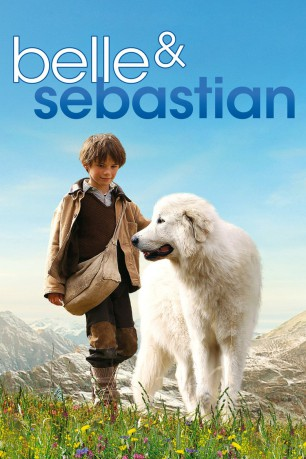
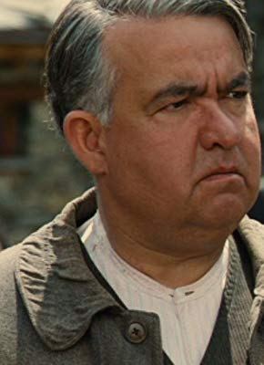
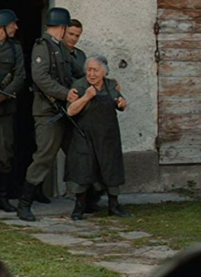

#2937 Belle und Sebastian
 
 IMDB-Wertung: 6.9 / 10
IMDB-Wertung: 6.9 / 10  Metascore: 0
Metascore: 0 
Im Jahr 1943 leiden die Bewohner eines kleinen Dorfs in den französischen Alpen nicht nur unter den deutschen Besatzern, sondern auch unter einer wilden Bestie, die Nacht für Nacht die Schafherden dezimiert. Da begegnet der kleine eigenbrötlerische Sebastian eines Tages dem vermeintlichen Untier, das sich als stattlicher, aber äußerst gutmütiger Hund herausstellt. Zwischen Belle, wie Sebastian ihn liebevoll nennt, und dem Jungen entwickelt sich eine tiefe Freundschaft, die selbst die aufgebrachte Dorfgemeinschaft nicht entzweien kann.
Jahr: 2013
Dauer: 99 Minuten
FSK: 0
Land: Frankreich Studio: Ascot Elite Entertainment GroupTonspuren:
Untertitel:
Auflösung: 720p (1280x544) Größe: 2734 MB
Genre: Abenteuer, Familie
Regisseur: Nicolas Vanier
Drehbuch: Juliette Sales, Fabien Suarez, Nicolas Vanier, Cécile Aubry
Soundtrack: Armand Amar
Darsteller:
 Félix Bossuet als Sébastien
Félix Bossuet als Sébastien Tchéky Karyo als César
Tchéky Karyo als César- Margaux Châtelier als Angélina
 Andreas Pietschmann als Lieutenant Peter
Andreas Pietschmann als Lieutenant Peter Jan Oliver Schroeder als Soldat Hans
Jan Oliver Schroeder als Soldat Hans- Tom Sommerlatte als Soldat Erich
- Dimitri Storoge als Docteur Guillaume
-  Urbain Cancelier als The Mayor
- Mehdi El Glaoui als André
- Paloma Palma als Esther
- Karine Adrover als La mère d'Esther
- Loïc Varraut als Le père d'Esther
-  Andrée Damant als Célestine
- Pasquale D'Inca als Le boucher
- Eric Soubelet als Fabien
- Michel Pellé als Le passeur
- Jean Blanc als Habitant délogé
- Matthieu Warter als Colonel allemand
- Jean-Hubert Vasina als Soldat désespéré
- Pascal Bison als Chasseur
- Michel Claraz als Chasseur
- Daniel Gainetdinoff als Chasseur
- Célestin Personnaz als Chasseur
- Jean-Michel Personnaz als Chasseur
- Pierre Ferréol als Doublure Sébastien
- Gilbert Suiffet als Doublure César
- Yvann Lebedeff als Doublure Sébastien
- Lonni Charrier als Doublure Sébastien
- Gaspard Gogué Meunier als Doublure Sébastien
Datei: X:\3-Trilogie(A-F)\Belle & Sebastian\Belle und Sebastian (2013, FSK0, 1280x544).mkv seit 02.01.2016
Festplatte: HD Collection-2(A-Z)-3(A-M)
 Alle Filme aus Gruppe '3-Trilogie(A-F)\Belle & Sebastian'
Alle Filme aus Gruppe '3-Trilogie(A-F)\Belle & Sebastian'